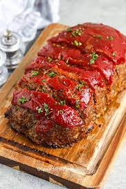

Deliciously juicy meatloaf with a succulent glaze sauce
The following recipe will prove to be easy. All you need is the most basic kitchen utensils. You almost can't mess it up!
The tools you will need to complete this job is a few bowls, oven-safe baking sheet or pan, etc.
Ingredients
- 1 pound ground beef
- 1 cup Panko
- 1 onion
- 1 tablespoon worcestershire sauce
- 1/4 cup ketchup
- 1 tablespoon red wine vinegar
- 1 tablespoon brown sugar
Steps
- Add ground beef, Panko, chopped onion, and worcestershire sauce to a large mixing bownl
- Use a mixer or your hands to combine mixture
- Form mixture into an oven safe pan
- Using a small bowl, add ketchup, red wine vinegar, and brown sugar and mix together
- Drizzle mixture onto the meatloaf
- Bake for 1 hour at 400 degrees F
- When done, let cool for 15 minutes. Then it's ready to serve